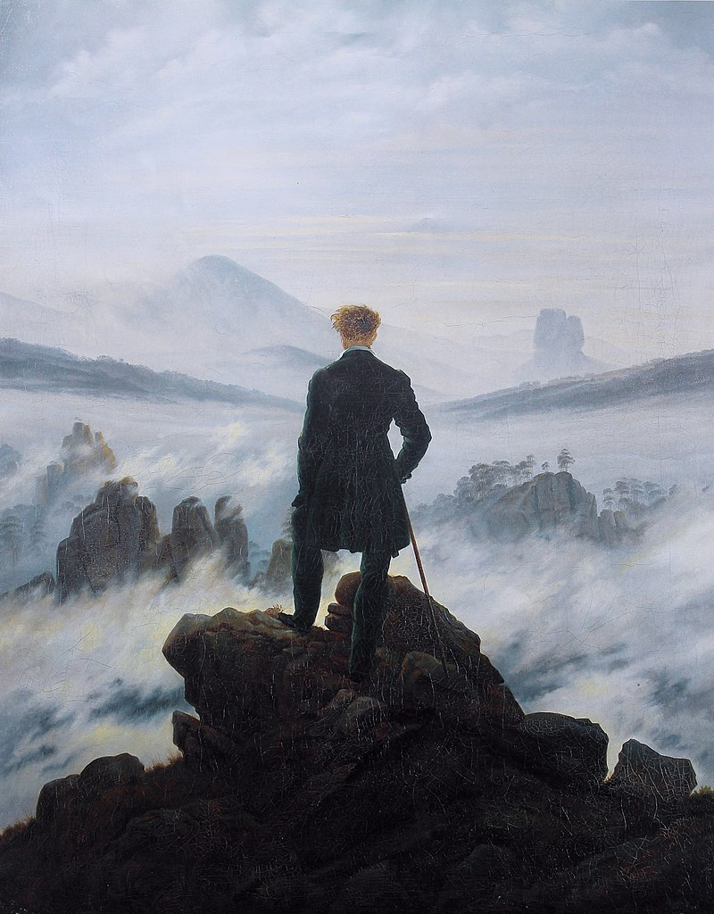

Here's our list for some of the most famous and beautiful Artworks of all time
#1 The Mona Lisa

"The Mona Lisa" is a half-length portrait painting by the Italian artist Leonardo da Vinci. It is considered an archetypal masterpiece of the Italian Renaissance, and has been described as "the best known, the most visited, the most written about, the most sung about, the most parodied work of art in the world". The painting's novel qualities include the subject's expression, which is frequently described as enigmatic, the monumentality of the composition, the subtle modelling of forms, and the atmospheric illusionism.
#2 Girl with a Pearl Earring
"Girl with a Pearl Earring" is an oil painting by Dutch Golden Age painter Johannes Vermeer, dated c. 1665. Going by various names over the centuries, it became known by its present title towards the end of the 20th century after the large pearl earring worn by the girl portrayed there. The work has been in the collection of the Mauritshuis in The Hague since 1902 and has been the subject of various literary treatments. In 2006, the Dutch public selected it as the most beautiful painting in the Netherlands.
#3 The Wanderer Above the Sea of Fog
"The Wanderer Above the Sea of Fog" also known as "Wanderer above the Mist" or "Mountaineer in a Misty Landscape", is an oil painting c. 1818 by the German Romantic artist Caspar David Friedrich. It has been considered one of the masterpieces of Romanticism and one of its most representative works. It resides in the Kunsthalle Hamburg, Germany.
#4 The Starry Night

The Starry Night is an oil on canvas painting by Dutch Post-Impressionist painter Vincent van Gogh. Painted in June 1889, it depicts the view from the east-facing window of his asylum room at Saint-Rémy-de-Provence, just before sunrise, with the addition of an ideal village. It has been in the permanent collection of the Museum of Modern Art in New York City since 1941, acquired through the Lillie P. Bliss Bequest. Regarded as among Van Gogh's finest works, The Starry Night is one of the most recognized paintings in the history of Western culture.
#5 The Scream
The Scream is the popular name given to a composition created by Norwegian Expressionist artist Edvard Munch in 1893. The original German title given by Munch to his work was "Der Schrei der Natur" (The Scream of Nature), and the Norwegian title is "Skrik" (Shriek). The agonised face in the painting has become one of the most iconic images of art, seen as symbolising the anxiety of the human condition. Munch recalled that he had been out for a walk at sunset when suddenly the setting sunlight turned the clouds "a blood red". He sensed an "infinite scream passing through nature". Munch created two versions in paint and two in pastels, as well as a lithograph stone from which several prints survive. Both of the painted versions have been stolen, but since recovered. One of the pastel versions commanded the fourth highest nominal price paid for a painting at a public auction.